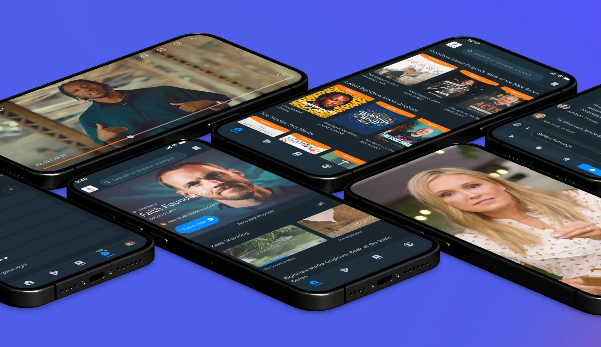
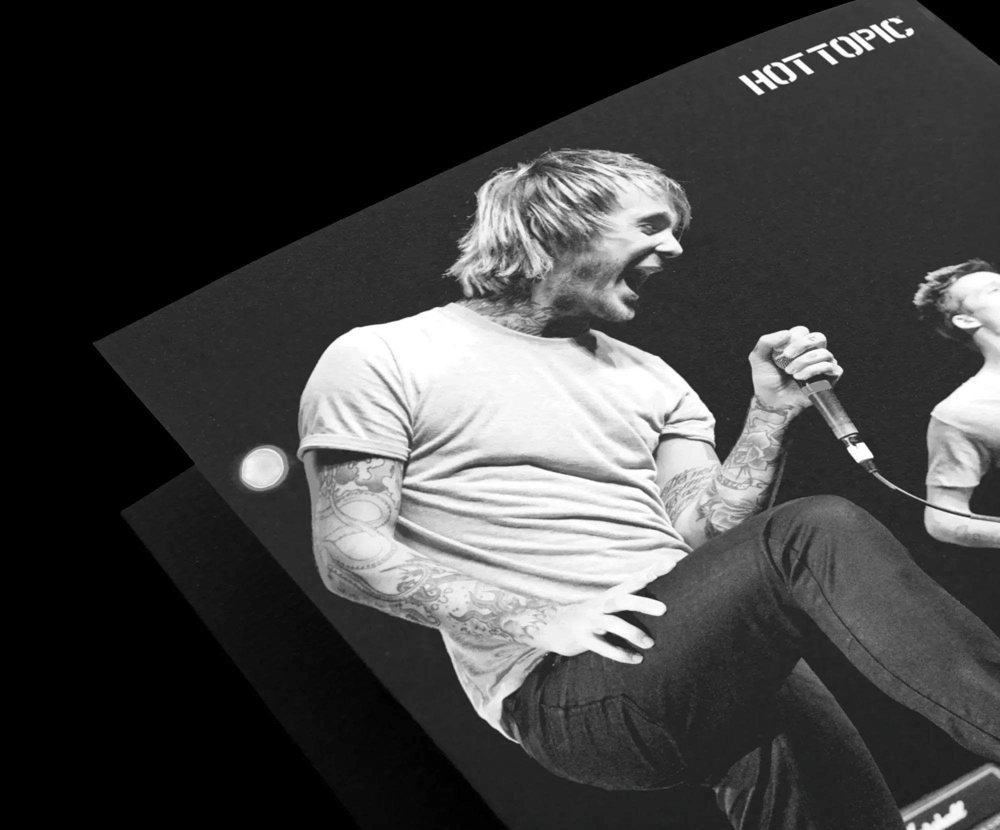
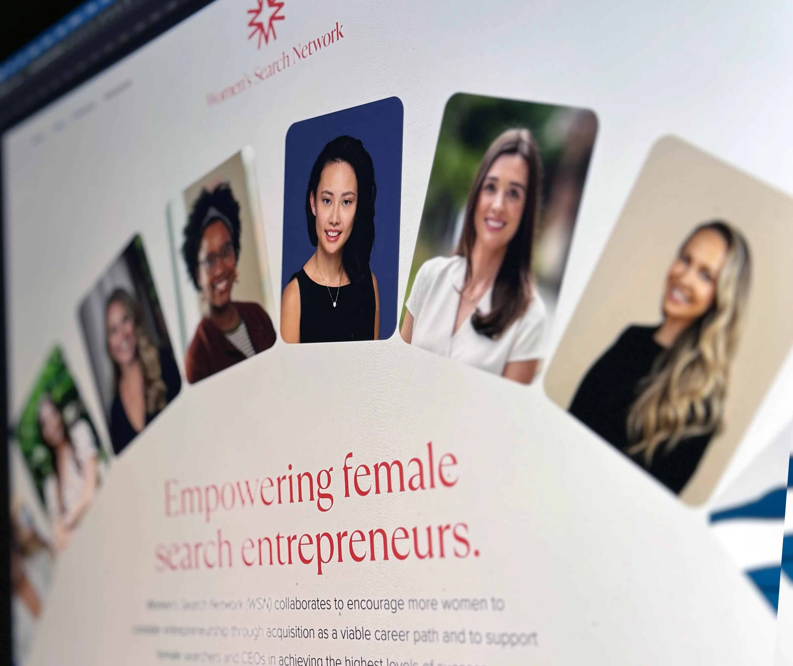

Creative professional with experience building brand-driven campaigns, leading multidisciplinary teams, and translating storytelling, identity, and strategy into cohesive visual systems.

Streaming
Blending Art and Strategy to Shape the Streaming Experience
View project

Retail
Leveraging Music and Pop Culture to Engage Consumers
View project

Action Sports
High-End Creative for a High-End Surf Shop
View project

Apparel
Refined Visuals to Elevate Brand Image
View project
Fintech
Evolving a Brand for the Future of Fintech
View project

Auto Lending
Setting a New Visual Standard for the Industry
View project

Private Equity
Crafting Digital Experiences That Inspire Founder Confidence
View project